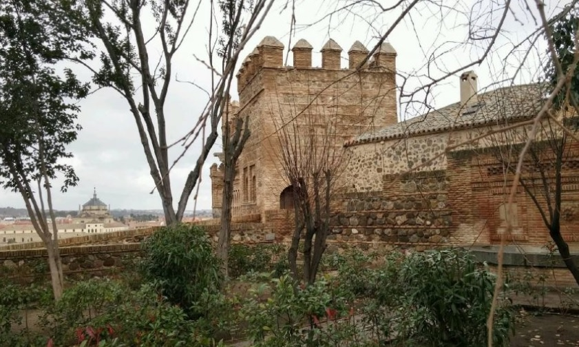

Mocedades de Carlomagno en toledo - La jeunesse de Charlemagne à Tolède
"GALIENNE LA BELLE" Y LOS PALACIOS DE GALIANA EN TOLEDO.
"GALIENNE LA BELLE" ET LES PALAIS DE GALIANA A TOLEDE
Artículo de Don Ramón Menéndez Pidal (1932)

|
Introduccion. Las tres leyendas que se refieren al nacimiento y mocedades de Carlomagno no tienen un origen común, no pertenecen a una misma familia. Una de esas leyendas, Mainet, célebre en toda la Europa medieval, la que cuenta el primer amor y casamiento de Carlos, se inventó en Toledo. El Mainet primitivo está densamente impregnado en recuerdos de tradiciones, edificios y lugares toledanos, y a eso debe cierto carácter excepcional que ofrece entre las demás leyendas de la épica carolingia francesa referentes a España. El relato épico de las mocedades de Carlomagno es asunto de un poema francés del siglo XII, titulado Mainet. Mainet es el nombre que toma Carlos, cuando muchacho, para vivir incógnito en Toledo, donde va desterrado. Otros poemas cantaron también esas mocedades, tanto en la literatura española como en la italiana, alemana y holandesa, y el punto de origen de todas estas obras encierra un interés especial para la historia de las relaciones literarias medievales. Versión española del “Mainet”; Carlos huido de su padre. Desde G. Paris, en 1865, los críticos están conformes en que Rainfroi y Heudri, los dos bastardos que, según la poesía, persiguen a su hermanastro cuando joven, responden a los dos nombres históricos de Raginfredo (mayordomo de palacio) y Chilperico (rey merovingio de Neustria), enemigos de Carlos Martel, por éste vencidos en la batalla de Amblève, en las selvas Ardenas (718)… Es verdad que Rainfroi y Heudri figuran en casi todas las versiones conocidas del Mainet, lo mismo en la francesa de hacia 1190, que en el Karleto franco-italiano, en el Karl del Stricker, en las alusiones contenidas en el Renaud de Montauban o en el Garin de Monglane, en el Karl Meinet alemán y en todas las versiones posteriores extranjeras, y aun españolas. En todas, el joven Carlos huye de Francia a causa de la persecución de esos dos hermanos, después de muerto su padre Pipino. Sólo en la versión española antigua, contenida en los textos del siglo XIII (el del arzobipo toledano y el de la Primera Crónica General) Carlos sale de su patria huido de su padre, por haberse rebelado contra las justicias paternas. Esta variante disconforme no me parece que pueda ser mirada como posterior al Mainet francés, al Karleto y a las demás mencionadas, en la cual se hubiese suprimido arbitrariamente la intervención de Rainfroi y Heudri. La novelesca opresión del joven Carlos por sus dos hermanastros da escenas demasiado pintorescas y animadas para que un refundidor las suprimiese. Debemos pensar más bien que la versión española deriva de una redacción primitiva que ignoraba a Rainfroi y Heudri, y en la cual Carlos salía de Francia huido de su padre; y, efectivamente, el relato español, carente de las aventuras de los dos hermanos, responde mejor que ninguno a los orígenes de la leyenda. Mainet y Alfonso VI de León. Decía con razón G. Paris: “Si hay algún elemento histórico en el relato de la huida del joven Carlos a la corte del amiral de Toledo, no habrá que buscarlo en la época de Carlos Martel, sino mucho más tarde; difícil es, en efecto, no relacionar ese relato con la historia de Alfonso VI de León.” Ya en 1848 Cuadrado, y en 1861 el conde de Puymaigre, habían notado la estrecha relación entre el destierro toledano de Mainet y el de Alfonso. Pero Milá dificulta la admisión de esta procedencia, y tras él Menéndez Pelayo, por hallar escaso el tiempo que media entre los hechos de Alfonso y el de la composición y fama de la chanson francesa, que es anterior al Turpin; es muy poco, dicen, medio siglo para que se cree una leyenda que transforma a Alfonso VI en Carlomagno. Es que estos críticos suponen, según las ideas románticas, una lenta gestación de toda leyenda en el alma del pueblo, sin admitir la caprichosa invención de un juglar que, al recordar las aventuras de Alfonso, fantasea las de Carlos. La analogía entre los sucesos históricos de Alfonso y los novelescos de Carlos es, por lo demás, evidente. Alfonso (VI), desterrado por Sancho II en 1072, se va a Toledo acompañado de su ayo Pedro Ansúrez y de algunos otros nobles leoneses; es bien recibido por el rey moro Mamún, al cual sirve en guerras contra los otros moros enemigos; cuando le llega noticia de la muerte de Sancho, Alfonso teme que, al despedirse de su huésped, éste le imponga condiciones; sale ocultamente de Toledo, so pretexto de ir de montería, y, llegado a su tierra, recibe los reinos de su hermano en herencia; después, en 1090, Alfonso se casa con la princesa mora Zaida, hija del rey de Sevilla, la cual se avista con su amante en un castillo toledano y lleva en dote una parte del reino (musulmán) de Toledo. Estos hechos se imitan en la fabulosa mocedad de Carlomagno, según la versión española: Carlos, desterrado por Pipino, se va a Toledo, acompañado de su ayo Morante y de otros nobles franceses; es recibido por el rey moro Galafre, al cual sirve en guerras; al saber la muerte de Pipino, sabe también que Galafre trata de retenerle y se sale de Toledo ocultamente, con achaque de ir de caza; llega a su tierra y recibe el reino de Francia en herencia; saca después de Toledo a la princesa Galiana y se casa con ella. Esta versión española, aun en su redacción tardía, prosificada en 1289, muestra líneas tan sencillas, estructura tan sobria, que, a primera vista, parece acreditarse como representante de un plan primitivo, compuesto sólo de partes esenciales. Pero esta impresión primera no basta, ciertamente, si no tuviéramos otros argumentos. Y éstos se me han presentado al pensamiento después de haber excursioneado bastante a través de las historias de Toledo y de haber rodado mucho, explorando los caminos y los campos en los alrededores de la imperial ciudad. Galiana y sus palacios. La “senda galiana”. El arzobispo de Toledo, en 1243, habla de los palacios de “Galiena” en Burdeos, y sólo medio siglo después la Gran Conquista de Ultramar habla de los palacios de Galiana en Toledo. En vista de estas dos fechas, afirmaron Milá y Menéndez Pelayo que la tradición de los palacios de la princesa mora nació en Francia y después se transportó a Toledo. Pero veamos cómo las cosas debieron pasar al revés. Empecemos por indagar si el nombre de la princesa es de origen francés o español, y hallamos desde luego que tal nombre Galiene no aparece en las muchísimas chansons de geste para designar otra mujer de carne y hueso más que la princesa toledana enamorada de Mainet. Observamos después que, mientras en Francia también es inusitado tal nombre en la toponimia, en España la denominación de Galiana es usadísima para designar ciertas vías romanas. Procede, sin duda, de la frase via Galliana, esto es, vía o calzada que conduce a las Galias (compárese: Galliana praedia, Galliana legio, etc.), como después se dijo “camino francés” al que iba de Santiago a Francia. Pero como los sustantivos femeninos “vía” y “calzada” salieron del uso ordinario, se echó mano del más modesto “senda”, y se llamó senda Galiana, o simplemente Galiana, a varios restos de vía antigua, y en la lengua de los pastores, el adjetivo sustantivizado una galiana vino a designar cañada para los ganados trashumantes, pues esas cañadas atraviesan también de Norte a Sur la Península y coinciden a veces con las vías romanas que conducían a las Galias. Ahora, viniendo concretamente a Toledo, se llama allí senda Galiana al camino viejo que va a Guadalajara (1), resto de la vía romana que, arrancando de Toledo por el sur del Tajo, iba a Zaragoza y penetraba en las Galias por el norte de Jaca, por el Somport (summo portu) de Canfranc. La tradición, al menos en el siglo XVI, sabía bien que ese camino, inmediato a la Huerta del Rey y a la casa y baños de Galiana, conducía a Francia, pues contaba que “aviendo salido un día Galiana a holgarse a los palacios de la Huerta del Rey, donde se solía ir a bañar, la hurtó Carlos, y por la senda que llaman Galiana se fue a Francia y se casó con ella en Burdeos” (2). Otra tradición más tardía pensó que Bramante, siendo rey de Guadalajara, había abierto aquel camino para ver a la desdeñosa princesa; Cristóbal Lozano recoge en 1666 la conseja, al hablar del amor que el moro agigantado y feroz sentía por Galiana: “costábale su buen rato de trabajo hablarla y verla, pues desde Guadalajara hasta Toledo abrió camino oculto su cuidado, senda escusada, por donde de revozo y de secreto venía a ver y a hablar a la idolatrada hermosura, y de allí le quedó el nombre de la senda Galiana (3). También el conde de Mora, coetáneo y precursor de Lozano, llama a esa senda Galiana “camino secreto (4), y es que entonces estaba abandonado, pues el camino ordinario a Guadalajara salía de Toledo ya en el siglo XVI por el norte del Tajo, como sale hoy. Los edificios contiguos a la senda Galiana podían recibir nombre de ella; así hallamos una venta de Galiana en el término de Azuqueca, sobre esa vía romana de Guadalajara a Toledo; y el mismo origen ha de tener el nombre de casas o palacios de Galiana dentro de Toledo, sobre el puente de Alcántara, puente por el cual la senda Galiana entraba en la ciudad. Es verdad que esos palacios de Galiana se cree hoy que tomaron su nombre en la leyenda de Mainete; pero esto es menos probable, dado el carácter esencialmente toponímico de tal denominación y lo antiguo de su aplicación a los palacios. Los palacios de Galiana en Toledo. Estos palacios toledanos no tenían otro nombre oficial ni notarial que el de Galiana ya en los primeros años del siglo XIII. En 1210, el rey Alfonso VIII dio al maestre de la Orden de Salvatierra (o sea de Calatrava) uno de los cuatro alcázares de Toledo, y al expresar el privilegio de donación a cuál alcázar se refiere, “dize que es aquel que dizen aver sido Palacios de Galiana, dentro de los muros de Toledo” (5). Luego, en 1220, Fernando III confirma a la Orden de Calatrava las donaciones de los reyes anteriores, y entre ellas se menciona ese “privilegium de alcazare domorum quae de Galiana vulgari eloquio nuncupantur” (6). Estas casas de Galiana eran la parte occidental de lo que antes había sido palacio de los reyes visigodos y el principal de los alcázares morunos, el habitado por Alfonso VI cuando se apoderó de la ciudad en 1085. Se dice que el mismo Alfonso VI edificó en esa parte occidental la iglesita de Santa Fe, cedida en 1210 a los caballeros de Calatrava. Por eso Alfonso X nos habla del “Alcázar de Sancta Fe de los Palacios de Galiana” (7). Y estos palacios del interior de la ciudad conservaron su fama hasta el siglo XVI. Los sabios moros y cristianos, que por orden de Alfonso X calcularon en Toledo las Tablas Astronómicas, desde 1258 a 1262, tenían sus juntas en el Alcázar de Galiana (8). Poco después los caballeros de Calatrava se complacían en ser herederos de la princesa mora, cuando en 1277 un comendador de esa orden militar databa una escritura de compra en Toledo, en los palacios que fueron de Galiana, e son de la orden de Calatrava” (9). Unos diez años más tarde, la Primera Crónica General nos cuenta que, al irse a reunir la corte de Toledo que ha de dar justicia al Cid, éste aconsejó a Alfonso VI: “et para ayuntar vos vuestra corte, señor, avredes más anchura en los palacios de Galiana que non en el vuestro alcáçar.” Nos da de paso este texto una comparación de tamaños entre los dos alcázares que respondía a la realidad, por más que la contradiga arbitrariamente la Gran Conquista de Ultramar cuando, llevándonos ya al terreno de la leyenda carolingia, al contar la llegada de Mainete con sus franceses a Toledo, dice que el rey moro los hospedó “en su alcázar menor, que llaman agora los palacios de Galiana, que él había hecho muy ricos a maravilla, en que se toviese viciosa aquella su hija; e este alcázar o el otro mayor eran de manera hechos que la infanta iba encubiertamente de uno al otro cuando quería”. En fin, después que los caballeros calatravos cedieron Santa Fe o palacios de Galiana a las monjas Santiaguistas (1494) y después que Isabel la Católica había cedido la parte oriental del mismo alcázar a las franciscanas de la Concepción (1484), formaron unas y otras monjas una sola comunidad en 1505, mencionándose entre sus heredades “las casas de palacios de Galiana, Santa Fe” (10). El destino religioso dado a estas casas de Galiana y la gran popularidad de la leyenda de Carlomagno hicieron que la tradición local no pudiese prescindir de buscar en otro edificio civil una segunda mansión para la princesa mora, y llamó palacio de Galiana a un palacio de campo que hay a orilla del Tajo, un kilómetro fuera de la ciudad, en la Huerta del Rey, es decir, contiguo también a la vieja senda Galiana. El primer autor en que hallo esta nueva localización es Luis del Mármol, en 1573, quien nos dice que Galafre, al celebrar las bodas de Galiana y Carlos, “porque los christianos no entrassen en Toledo, mandó hazer en la propia Güerta unos palacios que oy día llaman los palacios de Galiana (11). Este edificio data sólo de comienzos del siglo XIV, y hoy (1932) se halla muy derruído, pero aun así conserva dos torres unidas por un cuerpo central, bóvedas, arcos y algunas labores de yesería mudéjar con inscripciones árabes. Acaso reemplaza algún otro palacio de época anterior, pues hubo antes en la Huerta del Rey maravillosos edificios moriscos, obra del rey Mamún, que tenían fama universal, sobre todo uno que albergaba el reloj de agua construido por el gran astrónomo Azarquiel (hacia 1060-1070): dos albercas que se henchían y vaciaban con exacta progresión en veintinueve días, según el creciente o menguante de la luna, y cuya máquina fue estropeada en un torpe reconocimiento ordenado por Alfonso VII en 1134. Pero el recuerdo de tan sabio artificio perduró, y la tradición recogida por Mármol y por Lozano suponía que el agua de las mágicas albercas subía hasta vaciar en caños que la llevaban por cima del puente de Alcántara al palacio de dentro de la ciudad, “que era, dizen, en aquella parte que está oy el Hospital del cardenal don Pedro Gonçález de Mendoza (Santa Cruz) y el convento de Santa Fe la Real”. De este modo, los toledanos de los siglos XVI y XVII relacionaban en sus recuerdos los dos palacios de la princesa, la fama de los cuales volaba por España entera en la fraseología del idioma, hasta el punto que cualquier ignorante Sancho Panza recordaba los palacios de Galiana como la morada más deleitosa que podía imaginarse. Los palacios bordeleses y los toledanos. Frente a estos fuertes recuerdos toledanos, ¿qué significan los de Burdeos? En Burdeos recibían el nombre de Palai de Galiana las ruinas del anfiteatro romano de la ciudad, aún grandiosas en el siglo XVI. En 1243, nuestro Arzobispo Rodrigo de Toledo dice ser fama que ese palacio había sido construido por Carlomagno para la hermosa toledana; pero esta versión recogida por el prelado español tuvo en Francia tan poco arraigo, que una leyenda latina de Burdeos, perteneciente al siglo XIII o XIV, convierte la Galiana de Mainet en otra Galiana, hija del emperador Tito, nuera de Vespasiano, fundadora de Burdeos; y más tarde, los eruditos bordeleses del siglo XVI, desechando estas viejas opiniones, afirmaban que el anfiteatro había sido construido por el emperador Galieno: “Qu’on rejette les ineptes opinions de Roderic de Tolède”, escribe Gabriel de Lurbe; y, en efecto, la opinión del Arzobispo Toledano, a pesar del gran valor histórico del libro en que está consignada, fue totalmente olvidada y hoy se llama por todos Palais Galien al que en la Edad Media se llamó por algunos Palais de Galiene (12). Resulta, pues, que la primera mención de un palacio de Galiana en Burdeos pertenece a un español (13) y es más de treinta años posterior a la primera mención del palacio de Galiana en Toledo, contra lo que creían Milá y Menéndez Pelayo. Resulta también que Burdeos repelió muy pronto, desde el mismo siglo XIII o XIV, la opinión del Arzobispo de Toledo, la “inepta opinión” que los renacentistas enterraron sin honores. Podemos, pues, afirmar que Burdeos no fue origen, ni siquiera sede estable de una leyenda del palacio de Galiana. Burdeos nada esencial representa en los episodios de Mainet; ninguna redacción de este poema hace de la capital girondina una residencia de Galiana. Sus palacios deben ser simplemente una copia de los de España. Por el contrario, Toledo se nos presenta como la sede inconmovible de Galiana y de sus palacios. Indudablemente, la princesa enamorada de Carlomagno debe su nombre de Galiana a la toponimia de Toledo, ora lo haya tomado del de la senda solamente, ora del de los palacios, si éstos, como creo, no deben a la leyenda su denominación, sino a la senda. Val Salmorial. Otro nombre toponímico viene también a darnos luz sobre la primitiva leyenda de Mainet. Según la versión recogida en la Primera Crónica General, el combate de Mainete con Bramante, en el que el francés se apodera de la espada Durendart, ocurre en Val Salmorial, junto a Toledo. Esta localización coincide con la que se halla en el poema alemán Karl Meinet, según el cual, fue en Vaelmoriale, lugar cercano a Toledo, donde Carlos mató al gigante Bremunt y ganó la espada Durendart (14). Y es indudable que, según la genealogía de las versiones varias de la leyenda, una coincidencia del texto español con el alemán supone que el rasgo en que coinciden se hallaba en la versión francesa originaria. Desde luego, este Val Salmorial o Vaelmoriale, que afirmamos existía en el Mainet francés primitivo, no tiene nada que ver con el “Val de Moriane”, mencionado en el Roland 2318; obró ligeramente L. Gautier al identificarlos, fundándose en la variante Valsemorian que da el Mainete de la Conquista de Ultramar. Aquel Moriane es para la mayoría de los críticos la Maurienne de Saboya, pero siempre queda más bien en los países imaginarios, como tantos otros lugares del Roland. ¿Será también imaginario el lugar del Mainet? Podíamos creerlo así, porque en Toledo no he podido hallar hoy (1932) nadie que me diese razón de un Val Salmorial. Pero los toledanos de hace tres o cuatro siglos conocían perfectamente ese lugar. Así Pedro de Alcocer (15), contando nuestra leyenda, escribía: “Carlos hizo armas con Bramante en el lugar que agora llaman Balsalmorial, dos leguas y media desta cibdad”; y Pedro Salazar de Mendoza (16): “Lo del moro Bradamante y las armas que hizo en el Valsalmorial, entre Olías y Cavañas, ni lo digo ni lo creo.” Hoy, aunque no he podido hallar este Valsalmorial, he observado un curioso hecho topográfico y toponímico que nos compensa con creces de la pérdida de ese nombre, y es la conservación ahí, al este de Olías y Cabañas de la Sagra, y sólo ahí, de un nombre común que nos revela la significación del nombre propio desaparecido. Se trata del vocablo salmorial, que más corrientemente pronuncian salmoral, no registrado en ningún diccionario y evidente derivado de “sale muria”, sal muera; con él se designan los trozos de terreno salobreño, los salobrales que allí abundan, totalmente estériles y bien señalados a la vista por el color blanquecino que reciben de las sales afloradas a la superficie. he visto salmoriales en Magán, en Mocejón, en Olías, y en una “senda de los Salmorales” en Villaluenga; y bien pudiera el Val Salmorial antiguo ser la dehesa de Navarreta, situada en un hondo, en el término de Magán, en la cual hay salmoriales, a dos leguas y media de Toledo, conforme la distancia señalada por Pedro de Alcocer (17). En el nombre antiguo se ha perdido la primera l por disimilación, como en el nombre moderno Salmoral con una variante Samoral, dado a una casa de labor al sur de Toledo. Por este Samoral vemos cómo el vocablo de que tratamos gozó antes de más extensión geográfica; pero siempre resulta que su mayor vitalidad fue en la región del Val Salmorial del Mainete, pues esa región conserva hasta hoy (1932) en uso el vocablo, debido a la abundancia de tierras salobreñas (18). En conclusión, el Val Salmorial de la versión española de Mainete, y el Vaelmoriale de la versión alemana nos aseguran que el primitivo Mainet situaba su hecho de armas capital, la muerte de Bramante y la conquista de la gloriosa espada de Carlos y de Roldán, en una localidad real de la región de Toledo, entre Olías y Cabañas de la Sagra. “Mainete”, nacido en Toledo. Ya el simple hecho de que la acción del Mainet se desarrolle en Toledo es algo sorprendente dentro de los usos de la épica francesa. Las chansons que hacen venir sus héroes a España los colocan en campo libre o frente a ciudades fantásticas. Y esto desde las obras más antiguas conocidas hasta las del periodo que historiamos. ¿Quién sabe dónde se hallan las ciudades españolas de Galne, Durestant o Commibles del Roland? ¿Quién, por atentamente que lea el Fierabras, puede formarse idea de hacia dónde se imagina el poeta que caen los valles de Morimonde, la puente de Mautrible, o la ciudad de Aigremore, donde reside el amirant de España? ¿Quién pretenderá identificar Montorgueil, Carsaude, etc., de Gui de Bourgogne, o Avalence, Tortolouse, etc., del ciclo de Guillaume? Alguna vez las ciudades llevan nombres conocidos, pero son tan irreales como las otras; en el Roland, Cordres (Córdoba) se halla hacia los Pirineos, y Saragose está en una montaña… Sólo cabe apartar dos chansons excepcionales. La primera es Anseïs de Cartage, donde Carlomagno tiene corte en Saint Fagon (Sahagún), Anseïs se defiende en Castesoris (Castrojeriz), y la acción se desarrolla en otros muchos pueblos bien exactos del camino de Santiago. La segunda excepción es el Mainete, donde Carlos reside en Toledo y pelea en Valsalmorial; más notable por fijarse la acción en el fondo de España y no en el camino francés, que al fin y al cabo era frecuentado por los juglares; más notable aún por mencionar un valle, no un lugar poblado, próximo a Toledo. El autor de Anseïs tomó su asunto de un cantar español sobre el rey Rodrigo; el autor de Mainet ideó su poema sobre un tema histórico español, el destierro de Alfonso (VI) y los amores de éste rey con Zaida. A uno y otro poeta la escuela de los juglares españoles impuso el tratar de España con precisión geográfica: cosa extraña a la escuela francesa. El juglar de Anseïs estaba españolizado: probablemente residió poco o mucho en algún barrio de francos, sea en Sahagún, sea en otro punto de la vía del Apóstol. El juglar de Mainet, sólo habitando en Toledo pudo adquirir el grado de toledanismo que suponen tantas cosas reunidas, como el escenario principal de la ficción en Toledo, muy lejos de todo interés poético francés; la imitación de las anécdotas toledanas del destierro de Alfonso y de los amores de Zaida; el nombre de la princesa que en la ficción sustituye a Zaida, tomado de la toponimia local; el Valsalmorial, teatro de la hazaña mayor del joven Carlos. Los franceses eran tan numerosos en Toledo durante el siglo XII, que los fueros de la ciudad en los años 1118, 1137, 1174, los mencionan como el tercer componente de la población: “Castellanos, Mozárabes atque Francos.” Vivían algo esparcidos por toda la ciudad, muy compenetrados con sus vecinos, hasta el punto de tomar a veces nombre árabe al uso de los mozárabes; pero, en general, ocupaban el Barrio de Francos, que se extendía desde la Catedral al Zocodover. Nada más fácilmente creíble que el juglar inventor del Mainet fuese cualquier “Esteban Franco” o “Guillén Pitevín”, que desde su calle de Francos veía alzarse más allá del Zoco los Palacios de Galiana. El caso sería igual al del juglar Graindor de Brie, que escribió la Bataille Loquifer en Sicilia, hacia 1170; y sería análogo al del clérigo francés, que en Santiago, hacia 1140, redactaba el Turpín, tan empapado en el espíritu de las chansons de geste. Los autores franceses escribían entonces por todo el mundo. Pero también sería posible que la primera redacción del Mainet fuese obra de un juglar español, vecino de Toledo, cultivador de la poesía carolingia. De cualquier modo, el Mainet no nació junto al monasterio de Stavelot, sino junto al alcázar de Toledo: un juglar que desconocía, o desechaba, el poema de Basin con sus toscas aventuras de las Ardenas, precedentes a la coronación de Carlos, ideó que el joven rey llegase a ceñirse la corona previas otras aventuras más a la moda del siglo XII, ocurridas en Toledo. Sirva este episodio literario para mostrar la importancia cultural de las colonias francesas en España durante el siglo XII, época de su apogeo. No eran sólo la grey de negociantes que solemos pensar. Entre los que tenían tienda abierta en la calle de Francos vivían también escritores de obras capitales, afortunadas para correr el mundo, escritores que comunicaban a la literatura francesa temas, ambiente, hábitos poéticos españoles, a la vez que contribuían constantemente a propagar entre nosotros las obras del ingenio francés. “Mainet”, popular en Toledo en el siglo XII. La fábula del Mainete estaba ya muy popularizada en Toledo hacia la mitad del siglo XII. Entonces, entre las mujeres nacidas entonces, estaba de moda el nombre legendario de la princesa enamorada de Carlos. En 1202, una señora de bastante edad, viuda de Pedro martín, llamada “doña Galiana”, contrata sobre bienes que poseía en Olías la Mayor, localidad por cierto famosa en el Mainete español resumido en la Crónica General. En 1209 sabemos de otra “doña Galiana”, viuda, también, de un Arnaldo Tolosano e hija de Domingo Durán. Ambas Galianas otorgan escrituras redactadas en árabe como pudiera redactarlas la nigromántica (y legendaria) hija de Galafre; pertenecían, pues, a la población mozárabe de la ciudad, no a la gente de los francos, a pesar de que una de ellas tuviese por abuelo a un Durán de origen francés próximo o remoto. Aunque sea cierto, como creo, que los Palacios de Galiana tenían este nombre tomado de la senda Galiana antes que se hubiesen escrito las mocedades de Carlomagno, y aunque encima de esto supusiésemos que se contase por Toledo cualquier conseja oral sobre Galiana antes que se inventasen esas mocedades, no es creíble que el nombre de una protagonista de conseja se pusiese de moda entre las mujeres; esa moda supone el prestigio alcanzado por una creación literaria; supone la divulgación del Mainete entre los vecinos de Toledo hacia 1150, cuando hubieron de nacer y ser bautizadas esas dos Galianas de que tenemos noticia. Conclusión. No creo, como Gastón Paris y Pio Rajna, que las Mocedades de Carlomagno sean en ninguna de sus formas un tema histórico, nacido en remota época carolingia. Son una ficción novelesca tardía, pero no tan simple como la cree J. Bédier, obra de unos pocos literatos, sino fruto de una complicada elaboración tradicional. Bédier, reacio siempre al concepto de tradicionalidad, tomó por forma originaria del Mainet una ya contaminada con otras muy distintas ficciones de las Mocedades de Carlomagno, y olvidó por completo la versión en que el joven Carlos se expatría en Toledo huyendo de su padre. |
Introduction. Les trois légendes relatives à la naissance et à la jeunesse de Charlemagne n'ont pas une origine commune, et n'appartiennent pas à la même famille. L'une de ces légendes, Mainet, célèbre dans toute l'Europe médiévale et qui raconte le premier amour et le mariage de Charles, a été inventée à Tolède. Ce premier Mainet est tout imprégné de réminiscences liées aux traditions, aux édifices et lieux tolédans, ce qui lui confère un caractère exceptionnel parmi les autres légendes de l'Épopée carolingienne française relatives à l'Espagne. Ce récit épique de la jeunesse de Charlemagne est un poème en français du XIIe siècle, intitulé Mainet. Mainet est le nom que choisit le jeune Charles, pour préserver son anonymat à Tolède, où il a été exilé. D'autres poèmes ont également cette jeunesse pour thème, tant dans la littérature espagnole, que dans les littératures italienne, allemand et néerlandaise, et le point d'origine de toutes ces uvres présente un intérêt particulier pour l'histoire des relations entre les littératures médiévales. Version espagnole du "Mainet": Charles s'enfuit de chez son père. Depuis Gaston Paris, en 1865, les critiques s'accordent à voir en Rainfroy et Heudry, les deux bâtards qui, selon la poème, persécutent leur jeune frère, deux personnages historiques: Raginfried (Maire du palais) et Chilpéric (roi mérovingien de Neustrie), tous deux ennemis de Charles Martel et vaincus par lui à la bataille d'Amblève dans les Ardennaises (718) ... Il est de fait que Rainfroy et Heudry apparaissent dans presque toutes les versions connues de Mainet, qu'il s'agisse du texte français de 1190, du Karleto Franco italien, du Karl der Stricker néerlandais, des références à cette légende contenues dans le Renaud de Montauban ou dans le Garin de Monglane, du Karl Meinet allemand, ou de toutes les versions ultérieures étrangères et même espagnoles. Dans toutes ces versions, le jeune Charles fuit la France en raison des persécutions infligées par ses deux frères après la mort de son père Pépin. Il n'y a que dans l'ancienne version espagnole, telle qu'on la trouve dans des textes du XIIIe siècle (celui de l'archevêque de Tolède et celui de la "Primera Crónica général") que Charles fuit sa patrie de son père, pour s'être rebellé contre la justice de ce dernier. Cette variante atypique ne me semble pas devoir être considérée comme une variation postérieure au Mainet français, au Karleto et aux autres textes sus-mentionnés, dans laquelle aurait été supprimée, de façon arbitraire, l'intervention de Rainfroy et de Heudry. La romanesque oppression du jeune Charles par ses deux demi-frères fournit des tableaux trop colorés et animés pour qu'on les ait fait disparaître lors d'une réécriture. Nous devons penser plutôt que la version espagnole provient d'une rédaction primitive qui ignorait Rainfroy et Heudry, et dans laquelle Charles a quitté la France pour fuir son père; et il est de fait que le récit espagnol, dont sont absentes les aventures de deux frères, reflète mieux qu'aucun autre les origines de la légende. Mainet et Alfonse VI de León. G. Paris dit à juste titre: "S'il existe le moindre fondement historique dans le récit de la fuite du jeune Charles auprès de la Cour de l'amiral de Tolède, il ne faudra pas le chercher à l'époque de Charles Martel, mais beaucoup plus tard; difficile, en effet, de ne pas faire le lien entre ce récit et l'histoire d'Alfonse VI de León ". Déjà en 1848 Cuadrado, puis en 1861 le comte de Puymaigre, avaient noté la relation étroite entre l'exil tolédan de Mainet et celui d'Alfonse. Mais Milà répugne à admettre cette antériorité, et, après lui, Menéndez Pelayo, considérant le peu de temps qui sépare les faits relatifs à Alfonse et la composition ainsi que le succès de la chanson française, qui se situent avant Turpin. C'est très peu de temps, disent-ils, qu'un demi-siècle pour créer une légende qui transforme Alfonse VI en Charlemagne. C'est que ces critiques supposent, fidèles à des conceptions romantiques, une lente gestation de toute légende dans l'âme du peuple, excluant l'invention capricieuse de quelque ménestrel qui, alors qu'il relate les aventures d'Alfonse, rêve à celles de Charles. L'analogie entre la geste historique d'Alfonso et les aventures romanesques de Charles est, au contraire, évidente. Alfonse (VI), banni par Sanche II en 1072, se rend à Tolède avec son précepteur Pedro Ansúrez et certains autres nobles de León; il est bien reçu par le roi maure Mamun, pour qui il prend part à des guerres contre d'autres Maures ennemis; quand il apprend la nouvelle de la mort de Sanche, Alfonse craint, au moment de prendre congé de son hôte, de se voir imposer des conditions; il quitte Tolède en secrêt, prétextant qu'il va à la chasse à la chasse, et, une fois rentré sur ses terres, reçoit les domaines de son frère en héritage; ensuite, en 1090, Alfonse épouse la princesse maure Zaida, fille du roi de Séville, laquelle fait connaissance de son fiancé dans un château tolédan et reçoit en dot une partie du royaume (musulman) de Tolède. Ces faits sont repris dans le récit fabuleux de la jeunesse de Charlemagne, qui est la copie du modèle espagnol: Charles, banni par Pépin, se rend à Tolède, accompagné de son précepteur Morante et d'autres nobles français. Il est reçu par Galafre, le roi maure, et il devient un guerrier à son service. Il apprend la mort de Pépin, et il sait aussi que Galafre cherche à le retenir. Il quitte Tolède en secret, sous prétexte d'aller à la chasse. Revenu chez lui, il hérite du royaume de France. Puis il vient chercher à Tolède la princesse Galienne dont il fait son épouse. Cette version espagnole, malgré sa rédaction tardive, - ce texte en prose date de 1289 - présente des lignes si simples, une structure si sobre, qu'à première vue, elle semble apparaître comme l'archétype d'un récit composé uniquement d'épisodes essentiels. Mais cette impression première n'emporterait certes pas la conviction, si nous n'avions pas d'autres arguments. Et ceux-ci se sont imposés à moi après que j'aie suffisamment parcouru en long et en large l'histoire de Tolède et longuement flâné par les chemins et les campagnes des environs de la cité impériale. Galienne et ses palais. Le "chemin de Galiana". L'archevêque de Tolède, en 1243, parle des palais de «Galienne" à Bordeaux et ce n'est que cinquante ans plus tard, dans la "Grande Conquête de l'Outremer" [texte castillan racontant la conquête de Jérusalem au cours de la 1ère croisade entre 1291 et 1295 et qui contient "Mainete", la version espagnole de "Mainet"], qu'on parle des palais de Galiana à Tolède. Compte tenu de ces deux dates, Milà et Menéndez Pelayo suggèrent que la légende des palais de la princesse mauresque naquit en France et qu'elle fut ensuite transportée à Tolède. Mais, nous allons le voir, les choses ont dû se passer en sens inverse. Commençons par nous demander si le nom de la princesse est d'origine française ou espagnole et nous verrons qu'en réalité ce nom de Galienne n'apparaît dans aucune des innombrables chansons de geste pour désigner une femme de chair et de sang, si ce n'est pour nommer la princesse de Tolède amoureuse de Mainet. Observons ensuite que, tandis qu'en France même ce mot est inusité comme nom de lieu, en Espagne au contraire, le qualificatif "Galiana" est souvent employé pour désigner certaines voies romaines. Cela vient certainement de l'expression "via Galliana", c'est à dire, chemin ou chaussée conduisant aux Gaules (comme dans: Galliana Praedia, Galliana legio, etc.); de même qu'on a dit plus tard «camino francès» (route de France) pour désigner un itinéraire allant de Compostelle en France. Mais lorsque les substantifs féminins «via» (voie) et «calzada» (chaussée) cessèrent d'être d'un usage courant, on s'est servi du plus modeste "senda" (sente) et on a parlé de "senda Galiana" ou simplement de "Galiana" pour désigner plusieurs vestiges de voies antiques. Et dans la langue des bergers, l'adjectif substantivé "galiana" en est venu à désigner un couloir de transhumance, du fait qu'ils traversent eux aussi, du Nord au Sud, la péninsule et coïncident parfois avec des voies romaines menant aux Gaules. Or, pour en revenir plus spécialement à Tolède, on y désigne comme la "senda Galiana" l'ancienne route de Guadalajara (1), vestige de la voie romaine qui, partant de Tolède au sud du Tage, allait à Saragosse et entrait en Gaule au nord de Jaca, par le Somport (summo Portu) de Canfranc. La tradition, du moins celle du XVIe siècle, savait bien que le chemin qui longe la Huerta del Rey et la maison et les bains de Galiana, conduisait en France, puisque l'on racontait "que Galiana étant sortie un jour se prélasser aux palais de la Huerta del Rey, où elle avait coutume d'aller se baigner, Charles l'enleva et par la route que l'on appelle Galiana s'en fut en France où il l'épousa à Bordeaux"(2). Une autre tradition plus tardive imagina que Bramante, alors roi de Guadalajara, avait ouvert ce chemin pour aller voir l'orgueilleuse princesse. Cristóbal Lozano recueillit en 1666 cette conjecture, à propos de l'amour que le maure gigantesque et féroce ressentait pour Galiana: "Il consacra beaucoup d'efforts pour lui parler et pour la voir, car un chemin allant de Guadalajara à Tolède fut ouvert par ses soins, un sentier dérobé par où, dans le plus grand secret, il venait voir la beauté qu'il idolâtrait et s'entretenait avec elle, et c'est de là que lui est resté le nom de "senda Galiana" (3). Le comte Mora, contemporain et précurseur de Lozano, appelle, lui aussi, ce chemin Galiana "chemin secret (4) et le fait est qu'il était alors abandonné, car la route normale pour se rendre à Guadalajara partait de Tolède, dès le XIV siècle, au nord du Tage, comme c'est le cas aujourd'hui. Les bâtiments bordant la senda Galiana ont pu recevoir le nom du chemin. C'est ainsi que nous trouvons une "Galiana" mise en vente dans le canton d'Azuqueca, sur la voie romaine de Guadalajara à Tolède. Et c'est sans doute la même origine qu'il faut attribuer aux multiples maisons et palais de Galiana qui, à Tolède, surplombent le Pont d'Alcantara, par lequel la "senda Galiana" penètre dans la ville. Il n'est pas douteux que ces palais de Galiana sont considérés aujourd'hui comme tirant leur nom de la légende de Maine; Mais cela devient moins probable si l'on tient compte du caractère essentiellement toponymique de cette dénomination et de l'ancienneté de son application aux palais. Les palais de Galiana à Tolède. Ces palais tolédans n'avaient pas d'autre nom officiel ou notarié que celui de Galiana dans les premières années du XIIIe siècle. En 1210, le roi Alphonse VIII attribua au Maître de l'Ordre de Salvatierra (cathédrale de Calatrava) l'un des quatre alcàzars de Tolède, et pour préciser dans l'acte de donation à quel alcàzar il se réfère, "il déclare que c'est celui dont on dit qu'il fut les Palais de Galiana intra muros"(5). Puis, en 1220, Fernand III a confirma les donations faites par ses prédécesseurs à l'ordre de Calatrava, et mentionne à cette occasion le «privilegium de alcazare Domorum quae Galiana vulgari eloquio nuncupantur " (le privilège de l'alcàzar portant sur les maisons couramment appelées "de Galiana")(6). Ces "maisons de Galiana" correspondaient à la partie occidentale de ce qui avait été autrefois le palais des rois Wisigoths et au coeur des alcàzars mauresques qui furent habités par Alfonse VI quand il prit la ville en 1085. On dit que le même Alfonse VI construisit dans la partie ouest de cet ensemble l'église de Santa Fe, attribuée en 1210 aux Chevaliers de Calatrava. C'est pourquoi Alfonso X parle de l'"Alcázar de Santa Fe des Palais de Galiana" (7). Et ces palais à l'intérieur de la ville conservèrent leur renommée jusqu'au XVIe siècle. Les savants maures et chrétiens qui, sur l'ordre d'Alfonse X, composèrent les Tables astronomiques de Tolède au cours des années 1258-1262, tinrent leurs réunions dans l'Alcazar de Galiana (8). Un peu plus tard, les Chevaliers de Calatrava eurent le plaisir d'être traités en héritiers de la princesse maure, quand, en 1277, un commandeur de cet ordre militaire data un acte d'achat passé à Tolède des "palais autrefois de Galiana et aujourd'hui de l'ordre de Calatrava "(9). Environ dix ans plus tard, la Première Chronique Générale nous raconte que, quand la cour de Tolède allait se réunir pour juger le Cid, elle donna à Alfonse VI ce conseil: "et pour votre gouverne, Seigneur, sachez que votre cour serait moins à l'étroit dans les palais de Galiana que dans votre Alcàzar". Ce texte nous fournit, au passage, une comparaison des tailles des deux forteresses qui correspond à la réalité, d'autant plus utile qu'elle est contredite de façon irréaliste par la "Gran Conquista de Ultramar" quand, nous transportant dans un royaume carolingien appartenant déjà à la légende, elle raconte l'arrivée de Mainet et de ses Français à Tolède. On y affirme que le roi maure les accueillit »dans son petit alcàzar, alors appelé Palais de Galiana, qu'il avait doté d'un aménagement d'une merveilleuse richesse pour complaire à sa méchante fille portant ce nom. Cet alcàzar était relié au grand alcàzar de manière que l'infante puisse aller de l'un à l'autre sans être vue toutes les fois qu'elle le désirait." Enfin, après que les chevaliers de Calatrava eurent cêdé Santa Fe ou les palais de Galiana aux moniales de Saint Jacques de Compostelle (1494) et après qu'Isabelle la Catholique eût cédé la partie orientale dudit alcàzar aux Franciscaines de la Conception (1484), les unes et les autres fusionnèrent en une seule communauté en 1505, et mentionnaient parmi leurs héritages "les bâtiments des palais de Galiana, Santa Fe "(10). La destination religieuse assignée à ces maisons de Galiana ainsi que la grande popularité de la légende de Charlemagne conduisirent la tradition locale à rechercher un autre édifice civil pour en faire la maison de la princesse mauresque et on appela "Palais de Galiana une résidence champêtre sise sur les rives du Tage, à un kilomètre de la ville, dans la Huerta del Rey, c'est-à-dire bordant elle aussi l'antique senda Galiana. Le premier auteur chez qui je note cette nouvelle localisation est Luis del Màrmol, en 1573 , qui nous dit que Galafre, lorsqu'il célébra le mariage de Galienne et de Charles, "pour que les chrétiens n'entrent point dans Tolède, fit construire dans ses propres jardins un ou deux palais qu'on appelle de nos jours les palais de Galiana (11). Ce bâtiment ne date que du début du XIVe siècle, et aujourd'hui (1932), il est très délabré, mais conserve encore deux tours reliées par un corps de bâtiment central et est orné de dômes, d'arches et de plusieurs ouvrages de stuc mudéjar avec des inscriptions en arabe. Peut-être remplace-t-il un autre palais d'une époque antérieure, car il y avait autrefois, dans la Huerta del Rey de beaux bâtiments mauresques, oeuvre du roi Mamun, qui jouirent d'une renommée universelle, en particulier celui qui abritait l'horloge hydraulique construite par le grand astronome Azarquiel (vers 1060-1070): Deux réservoirs qui s'emplissaient et se vidaient selon un cycle de 29 jours exactement suivant les phases de croissance et de décroissance de la lune, et dont le mécanisme a été endommagé lors d'une révision maladroite ordonnée par Alfonse VII en 1134. Mais le souvenir de cette si ingénieuse machine s'est conservé, et la tradition, recueillie par Màrmol et Lozano, supposait que l'eau des réservoirs magiques montait jusqu'à ce qu'elle déverse dans les tuyaux qui la transportaient au sommet du pont d'Alcantara jusqu'au palais intra muros «qui était, dit-on, le bâtiment qui abrite aujourd'hui l'Hopital du Cardinal Pedro de Mendoza Gonçalez (Santa Cruz ) et le couvent de Santa Fe la Rea". C'est ainsi que les Toledans des XVI et du XVII ème siècles unissaient dans leurs souvenirs les deux palais de la Princesse. Leur renommée a parcouru toute l'Espagne et a laissé une trace dans la langue, au point que Sancho Panza, tout ignorant qu'il soit, évoque les palais de Galiana comme le plus charmant séjour qui se puisse imaginer. Les palais bordelais et les palais tolédans. Face à des traditions tolédanes d'une telle vigueur, quelle peut être la signification de celles de Bordeaux? A Bordeaux on a appelé "Palais de Galiana" les ruines de l'amphithéâtre romain de la ville, encore grandioses au XVIe siècle. En 1243, notre archevêque Rodrigue de Tolède affirmait que l'on disait que ce palais avait été construit par Charlemagne pour la belle Tolédane. Mais cette version recueillie par le prélat espagnol était si peu enracinée en France, qu'une légende latine de Bordeaux, datant du treizième ou quatorzième siècle, fait de la Galiana de Mainet une autre Galiana, fille, celle-là, de l'empereur Titus, et nièce de Vespasien, le fondateur de Bordeaux. Et plus tard, les érudits bordelais du XVIe siècle, ont rejeté ces anciennes opinions et affirmé que l'amphithéâtre avait été construit par l'empereur Gallien: "Qu'on rejette les ineptes opinions de Roderic de Tolède!" écrit Gabriel de Lure. Et de fait, le point de vue de l'Archevêque tolédan, malgré la grande valeur historique de l'ouvrage où il est consigné, a été totalement oublié et, de nos jours, tout le monde appelle "Palais Galien" ce qu'au Moyen Âge, quelques uns appelaient "Palais de Galienne" (12). On retiendra donc qu'on doit à un Espagnol la première mention d'un palais de Galienne à Bordeaux (13) et qu'elle est postérieure de plus de trente ans à la première mention du palais de Galiana de Tolède, contrairement à ce que pensaient Milá et Menéndez Pelayo. On notera aussi que Bordeaux s'empressa de rejeter, dès le XIIIème ou le XIVème siècle, l'opinion de l'archevêque de Tolède, "opinion absurde" que les hommes de la Renaissance enterrèrent sans fleurs ni couronnes. Nous pouvons donc affirmer que Bordeaux ne fut ni l'origine, ni le siège stable de la légende du palais de Galienne. Bordeaux ne représente rien d'essentiel dans les aventures de Mainet: aucune leçon de ce poème ne fait de la capitale girondine une résidence de Galienne. Ses palais doivent être simplement la copie conforme de ceux d'Espagne. A l'inverse, Tolède se présente comme le lieu incontournable où l'on trouve Galienne et ses palais. Il n'est pas douteux que la princesse éprise de Charlemagne doit son nom à la toponymie de Tolède, qu'elle l'ait emprunté à la voie de ce nom seulement, ou bien aux palais, si ceux-ci, comme je le crois, ne tirent pas leur appellation de la légende, mais de la "senda". Le Val Salmorial. Un autre toponyme vient également éclairer la génèse de la légende de Mainet. Selon la version recueillie dans la "Première Chronique Générale", le combat de Mainete et de Bramante, au cours duquel le Français s'appropria l'épée Durendal, se déroula dans le Val Salmorial près de Tolède. Cette localisation recoupe celle que l'on trouve dans le poème allemand Karl Meinet, qui place ce duel a Vaelmoriale, un lieu proche de Tolède où Charles occit le géant Bremunt et s'adjugea l'épée Durendart (14). Et il est indubitable, conformément à la généalogie des diverses versions de la légende, qu'une telle coïncidence des textes espagnol et allemand suppose que ce trait commun ait existé dans la version française d'origine. Disons ensuite, que ce Val Salmorial ou Vaelmoriale, dont nous affirmons qu'il devait exister dans la version originale du Mainet français, n'a rien à voir avec le "Val de Moriane", dont parle la Chanson de Roland au vers 2318. L. Gautier va bien vite en besogne quand il les identifie en s'appuyant sur la variante "Valsemorian" fournie par le Mainete de la Conquête de l'Outremer. Ladite Moriane, aux yeux de la plupart des critiques n'est autre que la Maurienne de Savoie, mais elle demeure toujours plutôt une contrée imaginaire, comme tant d'autres lieux de la Chanson de Roland. Les lieux où se déroule la chanson de Mainet sont-ils aussi des lieux imaginaires? Nous serions portés à le croire puisqu'à ce jour (1932) je n'ai pu rien trouver qui confirme l'existence d'un Val Salmorial. Mais les Tolédans d'il ya trois ou quatre siècles connaissaient parfaitement ce lieu. Ainsi, Pedro de Alcocer (15), lorsqu'il racontait notre légende, écrivait: "Charles croisa le fer avec Bramante à l'endroit qu'on appelle Balsalmorial, à deux lieues et demie de cette ville". Et Pedro Salazar de Mendoza (16): "Quant à cette histoire du Maure Bradamante et du duel qui eut lieu au Val Salmorial, entre Olías y Cavañas, je n'en dis rien et je n'en crois rien." Aujourd'hui, bien que je n'aie pu trouver nulle part ce Valsalmorial, j'ai observé un curieux fait topogaphique et toponymique qui nous porte à croire à la disparition de ce nom: c'est la conservation, à l'est d'Olías et de Cavañas de la Sagra, et seulement à cet endroit, d'un nom commun qui nous dévoile la signification du nom propre disparu. Il s'agit du mot "salmorial", que l'on prononce plus couramment "salmoral" et qui ne figure dans aucun dictionnaire. C'est, de toute évidence, un dérivé de "sale muria", "sal muera" (sau-mure). C'est ainsi qu'on appelle les parcelles de terrain gorgées de sel, sortes de marais salants terrestres totalement stériles qui se signalent à la vue par la couleur blanchâtre que leur donne le sel qui affleure à la surface. J'ai vu de telles "saumures" à Magán, à Mocejón, à Olías, et un "sentier des Saumures" à Villaluenga. Quant à l'antique "Val Salmorial", il pourrait bien s'agir du pâturage de Navaretta, situé dans une dépression, dans le canton de Magán, qui abrite deux "saumures", à deux lieues et demie de Tolède, distance conforme à celle indiquée par Pedro de Alcocer (17). Dans le nom ancien, le premier "l" a disparu par dissimilation, tout comme dans la variante "Samoral" du nom moderne "Salmoral" donné à une ferme au sud de Tolède. Grâce à ce "Samoral" nous voyons que le vocable en question a joui, autrefois, d'une plus grande extension géographique qu'aujourd'hui. Mais il montre aussi que c'est dans la région du "Val Salmorial" du "Mainete" qu'il fut le plus usité, puisque cette région conserve jusqu'à nos jours (1932) l'usage de ce vocable qu'elle doit à l'abondance des terres salées (18). En conclusion, le "Val Salmorial" de la version espagnole de "Mainet" et le "Vaelmoriale" de la version allemande nous confirment que le "Mainet" d'origine situait son fait d'armes principal, la mort de Braimant et la conquête de la glorieuse épée de Charles et de Roland, dans un endroit réel de la région de Tolède, entre Olías et Cabañas de la Sagra. "Mainet" est né à Tolède. Déjà, le simple fait que l'action du "Mainet" se déroule à Tolède à de quoi surprendre, au regard des usages du roman épique français. Cela est vrai des oeuvres les plus anciennes connues jusqu'à celle de la période que nous examinons. Qui peut dire où se trouvent les cités espagnoles de Galne, Durestant ou Commibles de la chanson de Roland? Qui donc, si attentivement qu'il lise la chanson de Fier-à-bras, peut se représenter où le poète imagine que se situent les vallées de Moribonde, le pont de Mautrible ou la cité d'Aigremore où réside l'amiral d'Espagne? Qui prétendra situer Montorgueil, Carsaude, etc., de Guy de Bourgogne; ou l'Avalence, le Tortoulouse, etc. du Cycle de Guillaume? Parfois les cités portent des noms connus, ce qui n'empêche pas qu'elles soient aussi irréelles que les autres: dans "Roland", Cordres (Cordoue) se trouve jouxter les Pyrénées et Saragosse se situe sur une montagne... Deux chansons seulement font exception à ce qui précède. La première est "Anseïs de Carthage", dans laquelle Charlemagne a établi sa cour à Saint Fagon (Sahagún), Anseïs se défend à Castesoris (Castrojeriz) et où l'action se déroule en de nombreuses autres localités bien déterminées du chemin de Compostelle. La seconde exception, c'est le "Mainet" où Charles réside à Tolède est se bat au Val Salmorial. Elle est d'autant plus remarquable qu'il situe l'action au coeur de l'Espagne et non sur le "chemin français" (de Saint-Jacques), fréquenté d'un bout à l'autre par les ménestrels. Plus remarquable encore parce qu'il mentionne une vallée, non point un lieu habité, proche de Tolède. L'auteur d'Anseïs a trouvé son sujet dans une chanson espagnole datant du roi Rodrigue. L'auteur du "Mainet" s'est inspiré d'un thème historique espagnol, l'exil d'Alfonse IV et ses amours avec Zaïde. Les deux poètes se virent imposer par leurs modèles, les ménestrels espagnols, l'obligation de traiter avec précision la géographie de l'Espagne, une pratique étrangère à l'école française. Le ménestrel, auteur d'Anseïs, était "espagnolisé": il résidait probablement plus ou moins dans quelque quartier français, soit de Sahagún, soit en quelqu'autre endroit du chemin de Saint-Jacques. Quant à l'auteur de Mainet, c'est seulement en habitant à Tolède qu'il put acquérir le degré de "Tolédanisme" que suppose une telle accumulation de détails: le choix comme théâtre principal de l'action de Tolède, si éloigné des centres d'intérêt des poètes français; l'imitation des anecdotes tolédanes portant sur l'exil d'Alfonse et ses amours avec Zaïde; le nom de la princesse qui, dans la fiction, se substitue, à celui de Zaïde, et qui est tiré de la toponymie locale; le Val Salmorial, théâtre de l'exploit majeur accompli par le jeune Charles. Les Français étaient si nombreux à Tolède, au XIIème siècle que les "fueros" (textes administratifs) de la ville, en 1118, 1137 et 1174 en parlent comme du 3ème groupe ethnique local: "Castillans, Mozarabes et Francs". Ils vivaient éparpillés un peu partout dans la ville, très mélangés avec leurs voisins, au point de prendre souvent un nom arabe en usage parmi les Mozarabes. Mais en général on les trouvait dans le "Barrio de Francos" (Quartier des Franç[ai]s) qui allait de la cathédrale au Zocodover. Il est tout à fait vraisemblable que le ménestrel auteur du Mainet, était quelque Esteban Franco ou Guillén Pitevín, qui depuis sa "rue des Français" avait vue, par-delà le souk, sur les Palais de Galiana. Son cas rappellerait celui du poète Graindor de Brie, qui décrivit la Bataille de Loquifer en Sicile, vers 1170. Il serait analogue à celui du clerc français qui à Saint-Jacques, vers 1140, rédigeait le poème "Turpin" si imprégné de l'esprit des chansons de geste. Les auteurs français écrivaient à cette époque pour le monde entier. Mais il serait également possible que la version d'origine du Mainet soit l'oeuvre d'un trouvère espagnol, vivant à Tolède ou dans les environs et cultivant la geste "carolingienne". En tout état de cause, "Mainet" n'est pas né aux abords du monastère de Stavelot, mais près de l'alcazar de Tolède: seul un ménestrel qui ignorait ou rejetait le poème de Basin, plein de brutales aventures ayant pour cadre les Ardennes et censées précéder le couronnement de Charles, a pu avoir l'idée que le jeune roi conquit sa couronne au prix d'autres aventures préalables, plus conformes au goût du XIIème siècle et ayant pour cadre Tolède. Cet épisode littéraire peut servir à démontrer l'importance culturelle des colonies françaises en Espagne au cours de la douzième siècle, époque de son apogée. Ce n'était pas seulement le troupeau de marchands qu'on imagine d'habitude. Parmi les gens qui teanaient boutique dans la "rue des Francs", il y avait aussi les auteurs d'oeuvres essentielles appelées à se répandre dans le monde entier, des écrivains qui communiquaient à la littérature française des thèmes un environnement et des usages poétiques espagnols, tout en contribuant à propager chez nous, de façon constante, les uvres engendrées par le génie français. "Mainet" populaire à Tolède au XIIème siècle. La fable de "Mainet" était déjà très répandue à Tolède vers la moitié du XIIème siècle. C'est ainsi qu'un nom à la mode pour les filles nées à cette époque était celui de la légendaire princesse amoureuse de Charles. En 1202, une dame d'un âge avancé, la veuve de Pedro Martin, appelée "Doña Galiana", se voit attribuer des biens qu'il détenait à Olías la Mayor, localité fameuse à en croire le "Mainete" espagnol tel qu'il est résumé dans la Chronique générale. En 1209 nous trouvons trace d'une autre "Doña Galiana", veuve, elle aussi, d'un certain Arnaldo Tolosano (Arnaud de Toulouse) et fille de Domingo Durán (Dominique Durand). Ces deux Galiennes apparaissent dans des écrits rédigés en arabe tels qu'aurait pu en produire cette nécromantienne (légendaire) qu'était la fille de Galafre. Elles appartenaient donc à la population mozarabe de la ville, non à la minorité française, même si l'une d'entre elles ait eu pour aïeul un Durand d'origine française récente ou ancienne. Bien qu'il soit établi, comme je le crois, que les Palais de Galiana portent un nom emprunté à la "senda Galiana" avant qu'on ne relate par écrit la jeunesse de Charlemagne, et bien que, de plus, nous supposions que circulait dans Tolède quelque récit oralau sujet de Galienne avant qu'on invente ces histoires de jeunesse, il n'est pas crédible que le nom de la protagoniste d'un simple conte ait pu devenir un nom de fille à la mode. Cette mode suppose le prestige que confère une création littéraire. Elle suppose la vulgarisation de l'histoire de "Mainete" dans la région entourant Tolède vers 1150, époque à laquelle ont dû naître et être baptisées les deux "Galiana" dont nous avons connaissance. Conclusion Je ne crois pas, comme Gaston Paris et Pio Rajna, que l'Enfance de Charlemagne soit, sous aucune de ses formes, un thème historique apparu à l'époque carolingienne. C'est une fiction romanesque tardive, mais elle est loin d'être aussi simple que l'imaginait J. Bédier: c'est l'oeuvre d'une poignée de littérateurs, si ce n'est l'aboutissement d'un processus complexe d'élaboration par la tradition. Bédier toujours méfiant envers tout ce qui relève de la tradition, a pris pour la forme archétypale de "Mainet" une version déjà contaminée par d'autres fictions plus lisibles, traitant de l'enfance de Charlemagne, et il oublia complètement la version dans laquelle le jeune Charles part en exil à Tolède, pour échapper à son père. Traduction Christian Souchon (c) 2008 |
Retour à "Palais de Galiana"